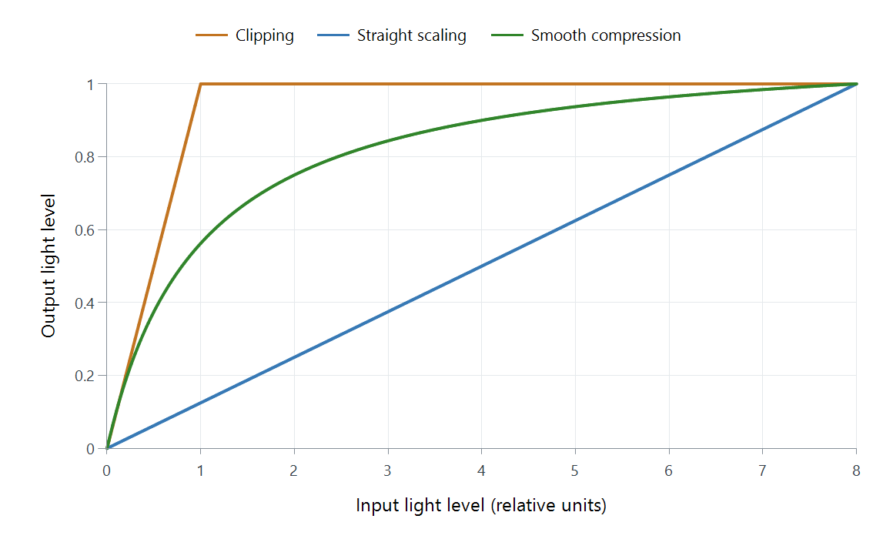

What a Tone-Mapping Curve Controls
A tone-mapping curve answers a simple question: for this input brightness, what output brightness should we use? Its shape controls which parts of the picture keep their contrast and which are squeezed together.

These are simplified mathematical examples, not Emby presets or a comparison of named curves. Both axes use relative linear-light values.
The flat part of the clipping line turns several different inputs into the same output. Detail in those brightness differences is lost. Straight scaling keeps their proportions but reduces the entire range, including the darker values. Smooth compression changes the proportions: brighter inputs receive progressively less space.
Reading the shape
| Part of the curve | What it can change in the picture |
|---|---|
| Dark end | Separation of near-black details |
| Middle | Apparent brightness and contrast of much of the scene |
| Bright end, often called the shoulder | How gradually highlights approach the output limit |
To read a point on the graph, trace upwards from the input axis to the curve, then across to the output axis. Where the curve becomes shallower, equally spaced input levels become closer together at the output: less separation between those brightness levels.
A tone-mapping implementation may use linear light, a perceptual signal representation, or another working space. Curves drawn in different spaces cannot be compared just by their shape on a graph.
Names such as Hable, Reinhard, and Mobius identify different approaches. The name alone does not specify the whole conversion pipeline, its parameters, or whether a particular Emby playback path uses it.
When comparing results, keep the source scene and playback path the same. Look at a face or another ordinary midtone as well as the brightest highlight: preserving one while making the other look wrong is still a compromise.
See Also
- How HDR-to-SDR Tone Mapping Works
- Tone Mapping Curve: Hable
- Tone Mapping Curve: Reinhard
- Tone Mapping Curve: Mobius